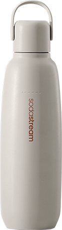
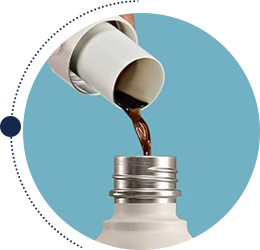

Butelka
termiczna do gazowania wody Beżowa, 0,9 l
Złap ulubione bąbelki do termicznej butelki i zabierz je ze sobą!
Szukasz orzeźwienia pełnego bąbelków dostępnego zawsze i wszędzie? Z innowacyjną butelką termiczną SodaStream Fizz&Go to możliwe! To unikalna kombinacja butelki do saturatora, bidonu i kubka termicznego. Gotowa na każdą Przygodę.
Fizz&Go to metalowa butelka termiczna, która umożliwia nagazowanie wody i utrzymanie chłodnej temperatury aż do 12 godzin. Niezwykle wytrzymała, perfekcyjnie szczelna i praktyczna.
Stylowy kolor:
stonowana kolorystyka idealna dla miłośników naturalnych barw
elegancki granat
subtelny beż
pastelowa mięta
subtelny beż
elegancki granat

pastelowa mięta

Ciesz się ulubionym napojem gazowanym w dobrym stylu!
SodaStream Fizz&Go: Twój towarzysz na co dzień i w drodze
Weź ze sobą bidon termiczny SodaStream Fizz&Go i rób to, co kochasz! Jego szczelna i trwała konstrukcja sprawią że możesz bezpiecznie nosić go w torbie lub plecaku. Dodatkowo bez problemu możesz wozić go w aucie - idealnie pasuje do uchwytu samochodowego!
Co wyróżnia butelkę do gazowania wody SodaStream Fizz&Go?
Hermetyczna konstrukcja z półelastycznym paskiem silikonowym i uszczelką, dzięki której butelka jest szczelna i nie przecieka.
Specjalnie dobrane tworzywa, dzięki którym butelka jest wolna od BPA.
Możliwość mycia w zmywarce, dzięki której butelka jest łatwa i wygodna w czyszczeniu.
Stal nierdzewna 18/8, dzięki której butelka jest odporna na uderzenia i korozję.
Butelka termiczna do gazowania wody: subtelny beż
W kilka chwil nagazuj wodę i zabierz ją ze sobą. Z butelką termiczną SodaStream Fizz&Go możesz wszystko! Ciesz się chłodnymi, orzeźwiającymi bąbelkami aż do 12 godzin lub podtrzymaj temperaturę ciepłego napoju*. Wyrusz z ulubionym bidonem termicznym w świat i ciesz się nieograniczonymi możliwościami.
*UWAGA! Nie nasycaj gazem wody o temperaturze powyżej 45°C. Zachowaj szczegółną odporność podczas przechowywania gorących płynów w butelce i otwierania butelki zawierającej gorące płyny.
*UWAGA! Nie nasycaj gazem wody o temperaturze powyżej 45°C. Zachowaj szczegółną odporność podczas przechowywania gorących płynów w butelce i otwierania butelki zawierającej gorące płyny.
gazuj
miksuj
i w drogę
Termiczna
butelka do
gazowania
Krok 1

Wlej zimną wodę do butelki SodaStream Fizz&Go 0,9 l i umieść bidon w saturatorze SodaStream.
Krok 2

Gazuj wodę, wciskając przycisk do uzyskania ulubionego poziomu bąbelków.
Krok 3
Opcjonalnie dodaj ulubiony syrop SodaStream lub SodaStream Crafted i stwórz swoją kompozycję.
Do jakich modeli saturatorów pasują butelki SodaStream
Fizz&Go?
Wielorazowe butelki SodaStream Fizz&Go 0,9 l pasują do
saturatorów Art, Terro, Duo i Ensō.
Czy butelka termiczna sprawdzi się jako kubek do samochodu?
Butelka SodaStream Fizz&Go idealnie mieści się w uchwycie
samochodowym więc z powodzeniem może służyć jako kubek termiczny do
auta. Dodatkowo posiada szczelną konstrukcję, która chroni przez
wylaniem napoju nawet w trakcie intensywnej jazdy.
Jakie napoje można przechowywać w bidonie SodaStream
Fizz&Go?
Metalowa butelka do gazowania wody jest idealna zarówno do napojów
gazowanych, jak i tych bez bąbelków. Utrzymuje temperaturę napojów -
dzięki czemu możesz cieszyć się nimi w chłodnym lub ciepłym wydaniu,
w każdej sytuacji.
Praktyczny design w wielkim stylu
Gdy Twój dzień jest aktywny
Każdego dnia zabieraj butelkę termiczną SodaStream Fizz&Go ze
sobą wszędzie - do pracy, na rower i na siłownię.
Gdy pracujesz w skupieniu
Nie zapominaj o nawodnieniu, napełnij butelkę termiczną
SodaStream Fizz&Go ulubionym napojem i miej go zawsze pod ręką.
Gdy zwiedzasz świat
Spakuj szczelną butelkę termiczną SodaStream Fizz&Go do torby
czy plecaka, by mieć odpowiednio schłodzony lub ciepły napój
zawsze przy sobie.
Gdy jedziesz autem
Umieść butelkę termiczną SodaStream Fizz&Go w samochodowym
uchwycie i wyrusz w bliską lub daleką podróż.
Gdy szukasz prezentu
Podaruj bliskiej osobie beżową butelkę termiczną SodaStream
Fizz&Go, która będzie jej wiernym towarzyszem przez lata.
Bąbelkowe orzeźwienie w twoim stylu
Odkryj świat pełen bąbelków - wybieraj z bogatej gamy syropów SodaStream, a później... gazuj i eksperymentuj na swoich zasadach.
Klasyczne smaki:
Na co masz dziś ochotę? Klasyczną Pepsi, orzeźwiający Lipton Ice Tea Lemon czy owocową Mirindę?

Gazowane lemoniady:
Co wolisz tym razem? Znaną cytrynową wersję lemoniady? Czy owocową np. na bazie Pomarańczy Mango?

Koktajle i moktajle:
Do czego wykorzystasz bezalkoholową bazę SodaStream Crafted? Dasz się ponieść wyobraźni czy postawisz na klasyczny moktajl?